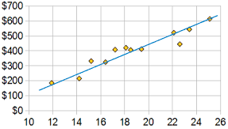
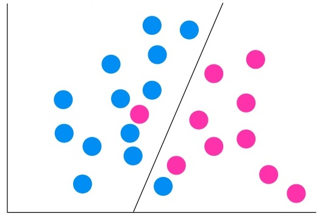
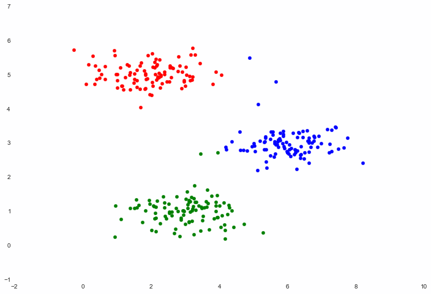
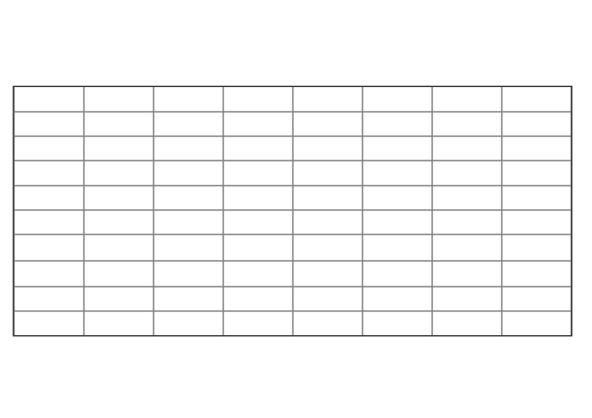
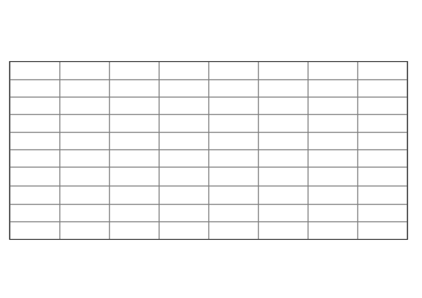
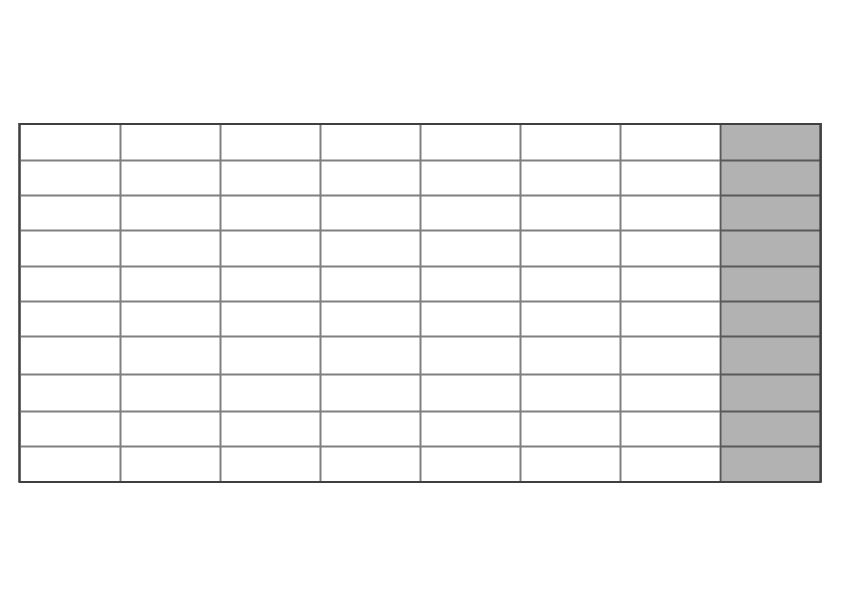
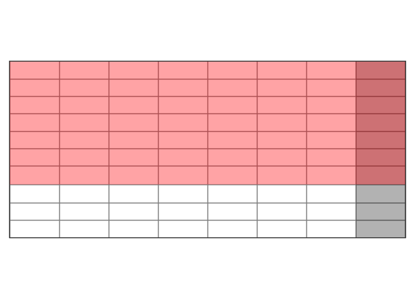

Definition
“Gives computers the ability to learn without being explicitly programmed.”
“explores the study and construction of algorithms that can learn from and make predictions on data”
High Level
-
Data
(contains patterns)
-
-
Machine
Learning
Algorithm
(finds patterns)
-
-
Model
(recognises patterns)
-
-
Application
(provides data to model)
Process
-
Choose the
right question
to ask

-
-
Check you have
the right data
-
-
Ensure you know how
to measure success

Types of Machine Learning
-
Supervised
The training data contains the value you want to predict
-
Unsupervised
The training data doesn't contain the value you want to predict
Categorising Problems
-
Regression

The training data contains the value you want to predict, and you want to find a line through the data points in order to estimate. Supervised.
-
Classification

The training data contains the value you want to predict, and you want to find which class a new data point will be in. Supervised.
-
Clustering

have data, want to find clusters in data - used in unsupervised learning. e.g. what are our customer segments?
Algorithm styles
-
Decision trees
-
Neural networks
-
Bayesian
-
K-means
-
...and lots more
Creating a supervised model




The End
Any (straight forward) questions?